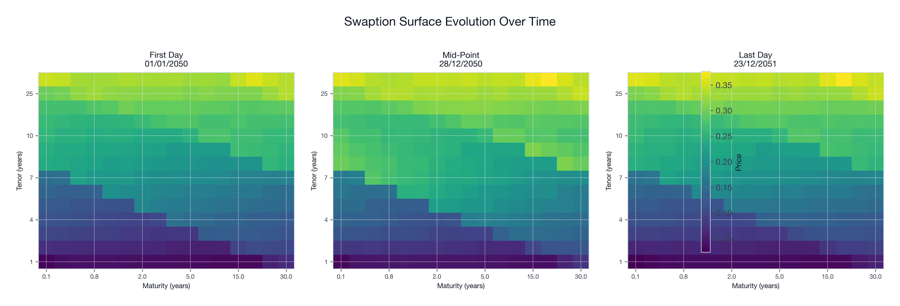
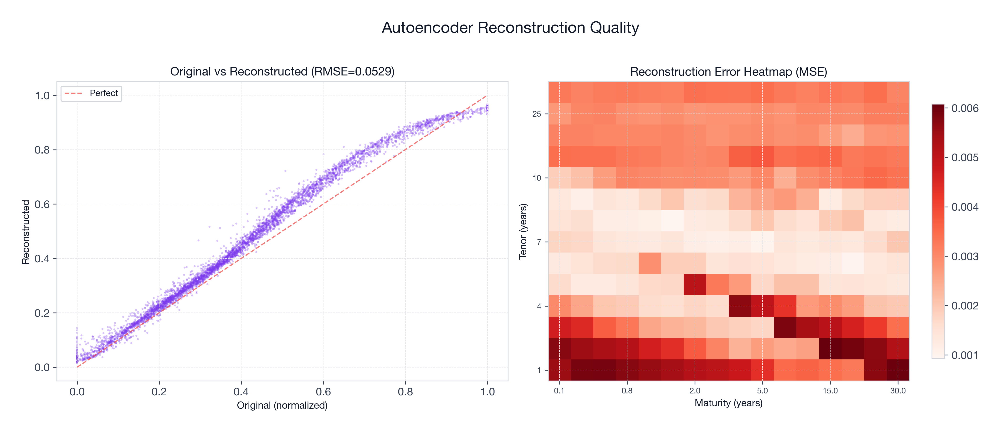
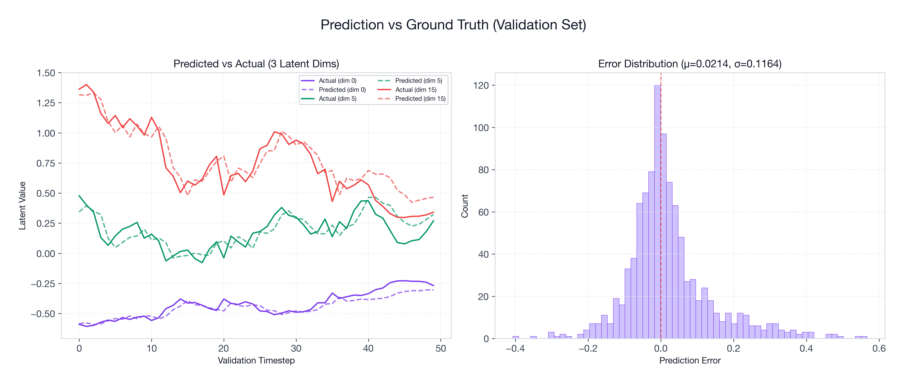
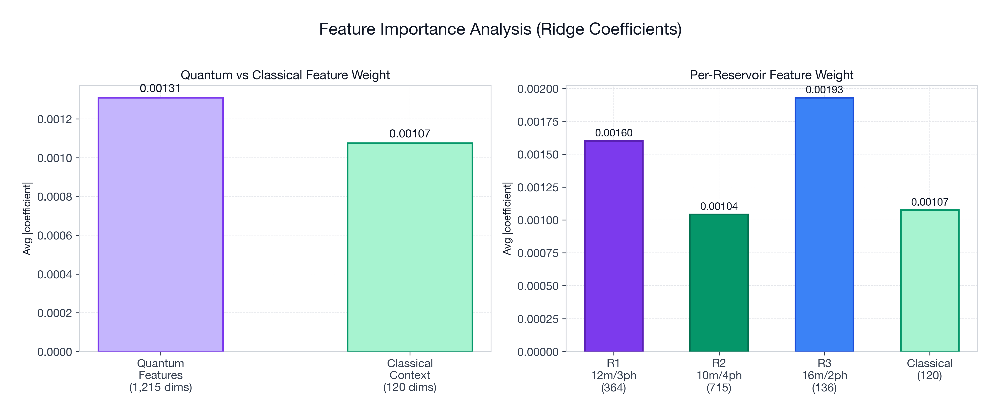
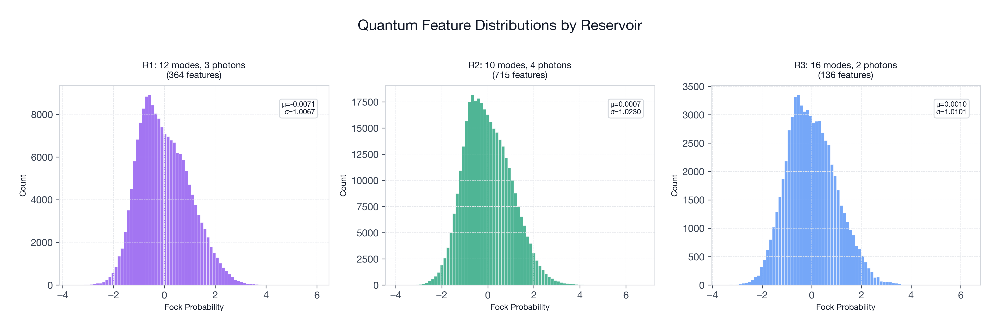
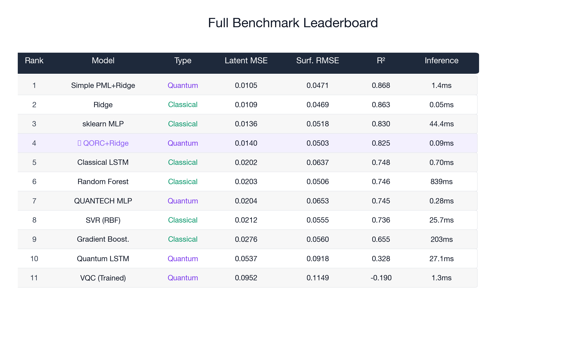
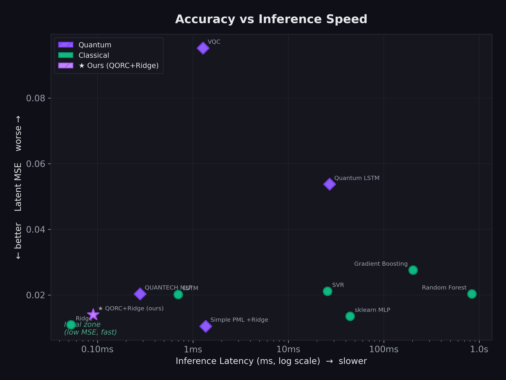
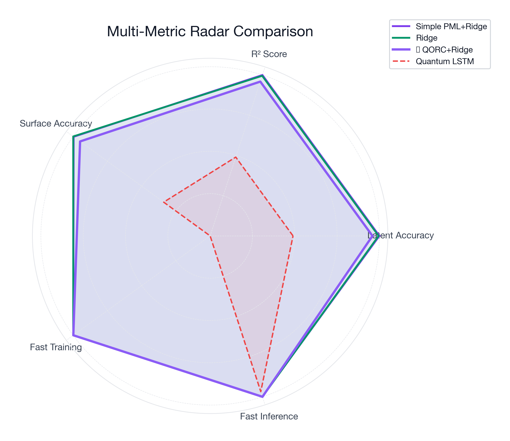
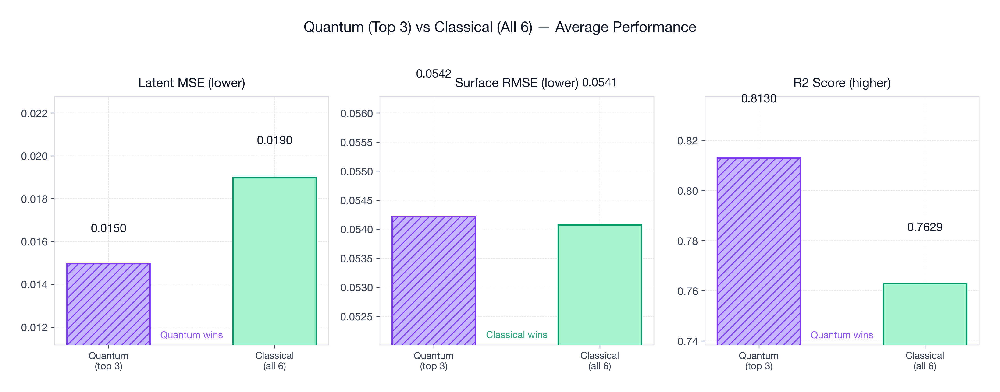

The best-performing quantum model across 11 benchmarks — with 0.09 ms inference, zero trained quantum parameters, and competitive accuracy against classical baselines.
Price swaptions — options on interest-rate swaps whose value varies across a 2D surface of tenors and maturities — using photonic quantum computing under strict hardware constraints.
494 daily surfaces, 224 dimensions each — a 14×16 tenor/maturity grid.
MerLin photonic framework. Sim: ≤20 modes, ≤10 photons. QPU: ≤24 modes, ≤12 photons. No amplitude encoding.
224-dimensional output is far too large for any quantum circuit directly.
Only 494 training samples — deep models overfit, shallow models underfit.
No-arbitrage structure — swaption surfaces have strong constraints naive models ignore.
We compress 224-dim swaption surfaces into a 20-dim latent space, extract 1,215 Fock-probability features from three fixed photonic reservoirs, and predict with a simple Ridge regression. The entire quantum layer has zero trainable parameters — only the classical readout is trained.
Click any step below for details.
8 design decisions that separate our approach from conventional methods.
Problem: Training quantum params with 494 samples → overfitting & barren plateaus.
Approach: Reservoir computing — fixed random circuits + trained classical readout.
Effect: Avoids barren plateaus. Features computed once, cached. ~20 min total.
Problem: PCA is strictly linear — misses smile dynamics and curvature.
Approach: Nonlinear AE with denoising (15% masking) + L1 sparsity.
Effect: Captures complex structure PCA misses. Enables Task B imputation.
Problem: ReLU at bottleneck causes dying neurons — latent dims collapse.
Approach: ELU activation (allows small negative values).
Effect: All 20 latent dims remain active. Selective sparsity without death.
Problem: Financial data has fat tails that corrupt StandardScaler.
Approach: Winsorize → RobustScaler → MinMax to [0,1].
Effect: Outlier-resistant, perfectly invertible. Zero data leakage.
Problem: Classical ensembles use random seeds — limited diversity.
Approach: Three reservoirs with photon numbers 2, 3, 4.
Effect: Pairwise, cubic, quartic interactions — fundamentally different families.
Problem: Challenge prohibits amplitude encoding.
Approach: Sigmoid maps to [0,1], scaled to [0,2π].
Effect: Smooth, differentiable, exploits full optical periodicity.
Problem: Directly predicting 224 prices is high-dimensional and noisy.
Approach: Predict 20-dim latent code, then decode.
Effect: Dramatically easier. Decoder guarantees manifold consistency.
Problem: MLP heads (377K params) overfit on 494 samples → MSE 0.020.
Approach: Ridge regression (α=100), cross-validated.
Effect: MSE 0.014 — 31% improvement. Only ~26K effective params.
Hover, zoom, and rotate to explore the data.
Click any figure to zoom.



What do quantum features actually contribute? Here’s what the data says.
Our QORC+Ridge achieves MSE 0.014 (R² 0.825), competitive with the best classical models (Ridge: 0.011, Simple PML+Ridge: 0.010). The gap is modest — and our quantum model is the only quantum approach that doesn’t catastrophically overfit (VQC: R²=−0.19, QLSTM: R²=0.33). This validates the reservoir computing paradigm: extract rich features from fixed quantum circuits, train only the classical readout.
On real photonic hardware, the 1,215 Fock features computed here via simulation would be obtained in nanoseconds per shot — unlocking latency and energy advantages that simulation cannot capture.


11 models evaluated on the same 50-sample validation set. Quantum Classical
| # | Model | Type | Latent MSE | Surf. RMSE | R² | Params | Train | Inference |
|---|
Quantum Classical




#1 among quantum models, #4 overall with MSE 0.014, R² 0.825, and fastest inference at 0.09ms. The only quantum approach within striking distance of classical baselines.
VQC (R²=-0.19) and Quantum LSTM (R²=0.33) are worst performers. Both train quantum params on 494 samples. Validates our reservoir computing paradigm.
3 photons in 12 modes → 364 Fock outcomes simultaneously. An exponentially rich feature space from modest physical resources.
Each Fock probability depends on the permanent of a unitary submatrix — #P-hard classically. Photonic chip computes these natively.
Genuine multi-body quantum correlations from photon bunching and interference — physics that cannot be efficiently simulated classically.
Different photon numbers → pairwise, cubic, quartic correlations. No classical ensemble achieves this diversity from one architecture.
Projected advantages on real photonic hardware (current results use MerLin simulation).
| Aspect | Classical Sim | Photonic QPU |
|---|---|---|
| Fock features | O(C(n+m,n)) | O(1) single shot |
| Latency | ~100-500ms | ~nanoseconds |
| Energy | ~10-50W | ~microwatts |
| Scalability | Combinatorial explosion | Linear in modes |